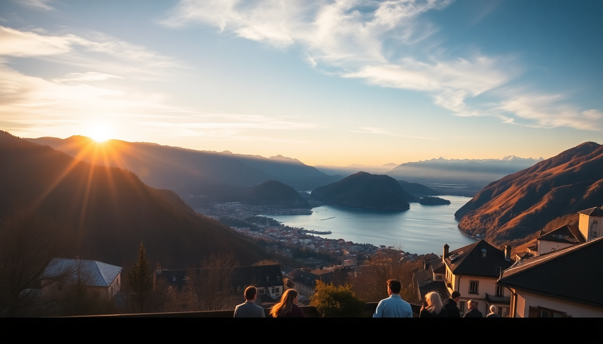

Best Day Trips from Geneva: Montreux, Chamonix & Annecy

I spent a week based in Geneva last fall, and quickly realized the city itself is more of a launchpad than a destination. Three day trips—Montreux, Chamonix, and Annecy—each felt like a different country, and none took more than 90 minutes by train or bus. Here’s what actually worked, what didn’t, and where I’d send a friend.
How do you get from Geneva to Montreux?
The train ride from Geneva Cornavin station to Montreux is the easiest of the three trips—just over an hour on the Swiss Federal Railways (SBB) line that hugs Lake Geneva’s northern shore. I grabbed a window seat on the left side and watched vineyards, castles, and the lake appear every few minutes. Trains run twice an hour, and you don’t need to book ahead; just buy a day pass at the station or use the SBB app.
Once in Montreux, walk straight to the lakefront promenade. The famous Chillon Castle is about 30 minutes on foot east of the station, or a quick ride on bus 201. I walked both ways and stopped at Le Palais Oriental for lunch—their lamb tagine with preserved lemon was the best meal I had in Switzerland, and it’s reasonably priced for the region. After lunch, skip the tourist train and hike up to the Marché Couvert de Montreux for local cheese and wine.
- Chillon Castle – 12 CHF entry, worth it for the underground vaults alone
- Lavaux Vineyard Terraces – take the train one stop back to Vevey and walk the terraces; the views are free
- Freddie Mercury statue – overrated, but a quick photo stop if you’re a Queen fan
- Le Palais Oriental – 11 Rue du Marché, Montreux; tagine and couscous done right
Is Chamonix doable as a day trip from Geneva?
Yes, but it’s a long day. The bus from Geneva’s main station to Chamonix takes about 90 minutes and drops you right at the Aiguille du Midi cable car. I used Ouibus (now part of BlaBlaCar) for 20 CHF round trip—cheaper than the train and just as fast. Book a morning bus around 7:30 AM to avoid crowds.
The Aiguille du Midi cable car is the main draw, and for good reason. It shoots you up to 3,842 meters in 20 minutes, and the view of Mont Blanc from the top terrace is genuinely staggering. I went on a clear Tuesday in October and had the platform almost to myself. Bring a jacket—it’s freezing even in summer. After coming down, I walked to Le Comptoir des Alpes on Rue des Moulins for a fondue that actually used local Beaufort cheese, not the processed stuff.
- Aiguille du Midi – 68 CHF round trip; book online to skip the ticket line
- Mer de Glace – take the Montenvers train from Chamonix station; the ice cave is touristy but kids love it
- Le Comptoir des Alpes – 50 Rue des Moulins; fondue for two with a bottle of local white wine runs about 45 CHF
- Chamonix town center – walkable in under an hour; the Maison de la Montagne has free maps for hiking trails
What makes Annecy worth the trip from Geneva?
Annecy feels like a miniature Venice without the crowds or the smell. The train from Geneva Cornavin to Annecy takes about an hour—change at Annemasse or take a direct TER. I paid 25 CHF for a same-day return ticket. The old town, Vieille Ville, is a maze of pastel houses and canals that empty into the Thiou River. Go early, before the day-trippers from Lyon arrive.
I ate lunch at Le Freti on Rue du Pâquier—a bouchon-style spot that does a 19 EUR lunch menu with a salad, pork belly with lentils, and a glass of local wine. The pork was tender enough to cut with a fork. After lunch, rent a paddleboat on Lake Annecy for an hour; the water is absurdly clear, and the mountains behind it make for a postcard view. Skip the Palais de l’Isle museum—it’s small and underwhelming for 5.50 EUR.
- Vieille Ville – walk the canals; the best photo spot is the Pont des Amours bridge
- Le Freti – 4 Rue du Pâquier; book a table if you go on a weekend
- Lake Annecy – paddleboat rentals start at 15 EUR per hour near the Jardins de l’Europe
- Château d’Annecy – 5.50 EUR; the views from the tower are better than the exhibits inside
Which day trip is best for families?
Chamonix is the most dramatic, but Montreux is the easiest with kids. The train is short, the promenade is flat and stroller-friendly, and the Chillon Castle has a scavenger hunt for children (ask at the ticket desk). I saw families picnicking on the grass near the castle while kids fed the swans. Annecy is also family-friendly if you stick to the lakefront and paddleboats, but the old town’s cobblestones can be a hassle with a stroller.
For teenagers who want adventure, Chamonix wins—the cable car and the Mer de Glace train feel like real excursions. Just budget for the tickets, which add up fast for a family of four.
How much time should you budget for each trip?
- Montreux – 5 hours is enough to see the castle, walk the promenade, and eat a sit-down lunch
- Chamonix – 8 to 10 hours if you do the cable car and eat in town; plan for an early start and a late return
- Annecy – 6 hours covers the old town, a lake paddle, and a leisurely lunch
I combined Montreux with a stop in Lausanne on the way back—just a 20-minute train ride—to see the Olympic Museum. It’s a good add-on if you have energy left.
FAQ
Which of these day trips is cheapest? Annecy is the most affordable. The train ticket is about 25 CHF same-day return, and lunch at a bouchon like Le Freti runs 15–20 EUR. Montreux is similar if you skip the Chillon Castle entry, but Chamonix will cost you at least 80 CHF per person for transport and the cable car.
Can you do two day trips in one day? I wouldn’t recommend it. Each trip involves at least an hour of travel each way, and the sights deserve a few hours. You’d end up rushing and spending more on transport. Pick one and do it well.
What’s the best time of year for these trips? Late spring (May–June) and early fall (September–October) are ideal. Summer is crowded, especially in Annecy, and winter limits hiking in Chamonix unless you ski. I went in October and had clear skies and thin crowds at all three.
Conclusion
- Montreux is the easiest day trip from Geneva—short train, flat walking, and solid food at Le Palais Oriental
- Chamonix delivers the biggest payoff (Aiguille du Midi views) but requires a full day and a budget for cable car tickets
- Annecy offers the best value for a relaxed day of canals, lake paddling, and affordable French lunch
- Book trains and buses online in advance for the best prices, especially for Chamonix
- Skip the tourist traps (Freddie Mercury statue, Palais de l’Isle) and focus on the lakes, castles, and local food